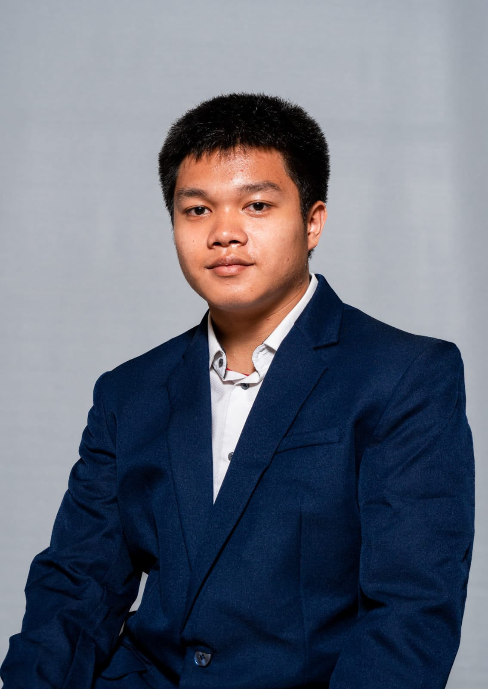
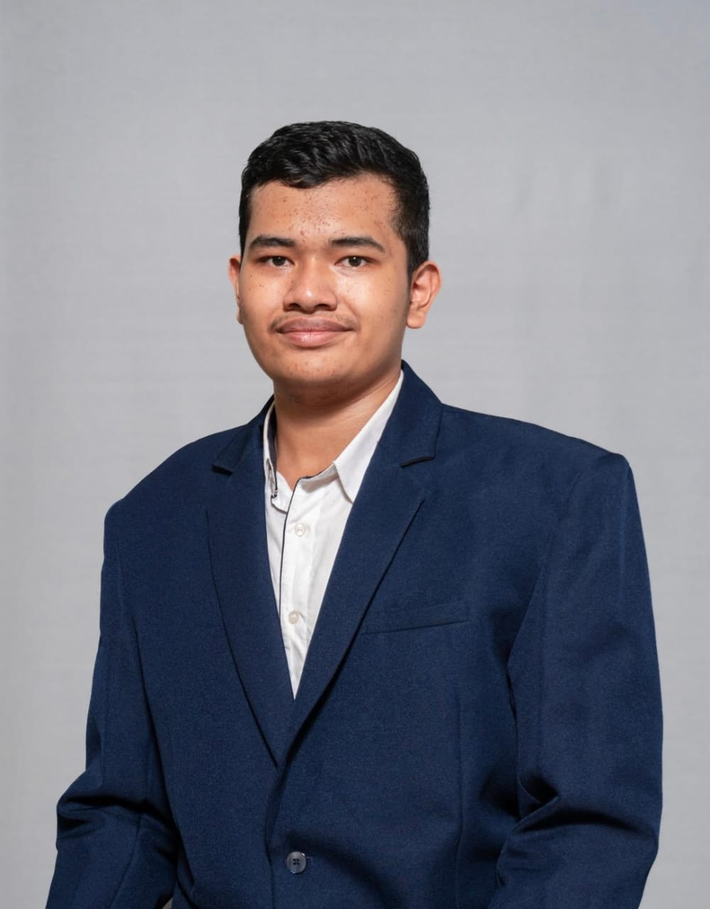

Meet the Founders
Dibalik For-BTC, ada dua mahasiswa biasa dengan mimpi besar—membuat teknologi kompleks jadi sederhana dan seru buat semua orang. Kenalan lebih dekat yuk!

Samuel
Seseorang yang menyukai musik, membaca buku, dan olahraga. Baginya coding hanyalah sebuah kewajiban pada awalnya, namun sekarang, bagi dia coding adalah salah satu hal yang menjadi kesukaan dan tempatnya berkarya.
- Hobi: Olahraga, Musik, dan membaca buku
- Plan Masa Depan: Menjadi Developer Blockchain
- Warna Favorit: Hitam dan Merah
- Hewan Favorit: Kucing
- Mobil Impian: Mercedes G-Class
- Latar Pendidikan: SMA San Marino
- Pendidikan Sekarang: Ilmu Komputer, President University

Alexander
UI/UX enthusiast yang percaya bahwa desain bukan sekadar tampilan, tapi pengalaman. Alexander ingin membangun startup yang memberdayakan teknologi dengan sentuhan manusia.
- Hobi: Desain UI/UX, Game
- Plan Masa Depan: Fullstack Engineer & Founder Startup
- Warna Favorit: Hitam
- Hewan Favorit: Anjing
- Mobil Impian: BMW M4
- Latar Pendidikan: SMA DEF
- Pendidikan Sekarang: Rekayasa Perangkat Lunak, Universitas DEF